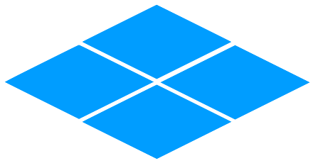

Main idea: Visuals
Introduction
In the gameboy, there are two important graphical elements - tiles, and sprites.

Tiles are square pixel art images, intended to be laid together in order to make a background for a game. These tiles are organized into groups called 'tilemaps' and then Sprites are drawn on top of these maps to create the impression of an object or character existing in a world.
The gameboy (using some strategies with memory we will discuss later) views a segment of the map and displays it on screen. The designer may choose to make the map bigger than the visual field of the gameboy screen, this can be used to create scrolling effects by slowly moving the perspective of the screen across the tilemap.

So how does the gameboy know what sprites and tiles to display on-screen? We plug in a cartridge, switch the power on, and magically everything comes into place. So how does that work? To answer that question, we'll need to explore a few different concepts - computer memory, and data encoding.
Inside the gameboy, there are special electronic devices that store data by charging little components called transitors with electricity. If a transistor has electricity in it the computer thinks it has the value 'true', and if it's not charged it's 'false' (there is more complicated information behind this, and cases where the data is stored slightly differently, but this is a good basic example to hold in your mind.) All of the information for playing a game can be described using the values 'true' and 'false'.
The gameboy then activates some electronics that reads all the transitors like words in a book. (From now on, we will call these transistors 'memory', and what's stored in them 'data'.)
All of the memory has addresses, similar to how all pages in a book have a page number. The gameboy will use data stored at different points in memory for different purposes. The data at one location for example will be used to know what sprites look like, and another location will have all of the information about which sprites are drawn, and where.
In the next section, we will talk about encoding of sprites, which describes how information about how sprites are drawn can be written into memory.
<- Back to GameBoy Tutorials